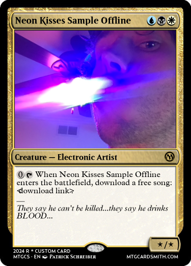

About | Sample Offline Music!
About | Sample Offline Music!
My Platform Links (social and otherwise)
About Sample Offline
 I first started making music around 2016 when I wanted to see what a song sounded like slowed WAAAY down. Since then, making music has evolved to be one of the major ways I reason about and explore the world.
Through the creation of sounds and music I hope to create layered works which always offer something to the listener, works that evoke the same sense of wonder and discovery I feel when listening to music, and which aren’t easily described with words.
Sample Offline (Patrick Schreiber) currently calls Chicago home; but always loves an adventure...
...as for the name, I guess 'Sample Offline' just kept popping up early in my music career, so it became near and dear to me.